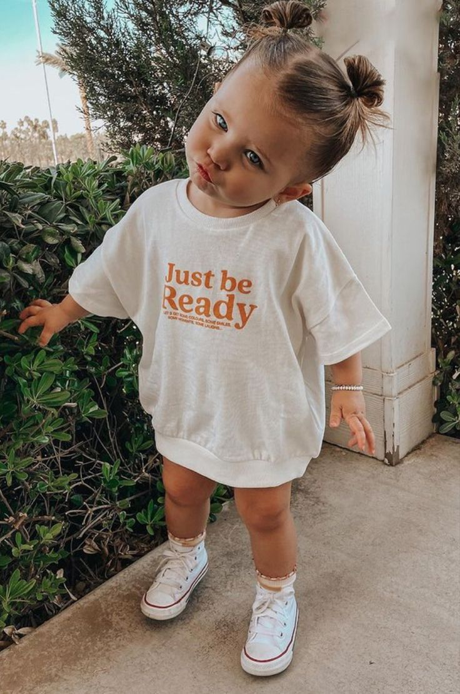

Manifesto
Hello all UBSWPC members, My name is Tom Lee-Brown, also known as Big Tom, and I am starting my campaign to run for Men's Swimming Captain. Despite coming across as quiet and reserved, when it comes to swimming nothing can deter my passion and love for it. Joining this club has really brought me out of my shell and I have you, the members of this club, to thank for that. As Captain, I hope to show my gratitude by making swimming as fun and enjoyable as I possibly can. My first year as part of the club has been nothing short of brilliant. Whether it be the experiences, such as BUCS, BUSL or Score, or the new friends I have made along the way, have thoroughly enjoyed it. I feel during this time I have learnt so much about the importance of a strong leader, especially in the swim squads with no coach. After seeing the great work of Kai and Jana this year, I feel inspired to carry on their success into next year. Why vote me as Captain: My dedication to and passion for swimming is incomparable. I practically live in the pool. During my time as a swimmer I have accumulated valuable experience and knowledge that I am eager to share with all of you. I am always pushing to bring the best out of myself and strongly believe I can and will do the same for you, whether you are a competitive or fitness swimmer. I like researching the latest swimming developments and love experimenting with new skills and sets, which means that there will be lots of variety in the session plans that I write.
Glaze me plz
I HAVE A CLUB RECORD! I HAVE A CLUB RECORD! I HAVE A CLUB RECORD! I HAVE A CLUB RECORD! I HAVE A CLUB RECORD! I HAVE A CLUB RECORD! I HAVE A CLUB RECORD! I HAVE A CLUB RECORD! I HAVE A CLUB RECORD! I HAVE A CLUB RECORD! I HAVE A CLUB RECORD! I HAVE A CLUB RECORD! I HAVE A CLUB RECORD! I HAVE A CLUB RECORD! I HAVE A CLUB RECORD! I HAVE A CLUB RECORD! I HAVE A CLUB RECORD! I HAVE A CLUB RECORD! I HAVE A CLUB RECORD! I HAVE A CLUB RECORD! I HAVE A CLUB RECORD! I HAVE A CLUB RECORD! I HAVE A CLUB RECORD!

More manifesto
My goals as Captain: My primary goal as Captain is to ensure that we create a welcoming and enjoyable environment for all swimmers. Swimming should be something to look forward to, not a chore. I aim to start building a squad that will not only challenge to be in the BUSL A final, but also qualify for and excel in BUCS finals. I also aspire to provide guidance to help each swimmer enhance their competitive edge and/or fitness levels. I will be committed to being a supportive and approachable leader, addressing any concerns or issues that may arise. I want to emphasize that I will be there to help and encourage all team members, and will welcome any questions or requests for assistance. I am excited about the opportunity to lead our team to success and create a positive swimming experience for everyone involved. Thank you for considering me for the role of Men's Swimming Captain.

You should probably vote for little Tom
He's just much better than I am tbh. I'm too busy oogling at little kids...